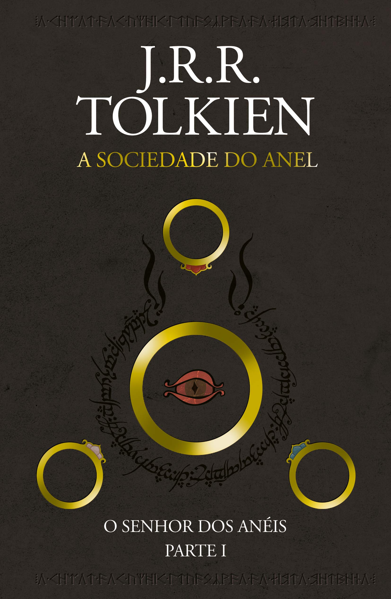

Harry Potter e a Ordem da Fenix

Sinopse
Parece impossível, mas, no bairro mais Muggle do mundo Muggle, Harry é emboscado por Dementors! Para salvar a sua
vida e a do primo Dudley, Harry não tem outra hipótese senão usar magia - mesmo sabendo que isso significará a sua
expulsão mais que certa de Hogwarts. Enquanto o Ministério da Magia continua a não acreditar que o terrível Senhor
das Trevas está de volta, Voldemort e os seus fiéis Devoradores da Morte já começaram a preparar o seu regresso ao
poder. Porém, há uma nova esperança: uma antiga ordem secreta, da qual os pais de Harry fizeram parte, voltou a
organizar-se e Dumbledore está atento.
Fonte: Google Books
| Data |
Autor |
Idioma Original |
Gêneros |
Número de Páginas |
Editora |
| 21 de junho de 2003 |
J.K Rowling |
Inglês |
Romance, Ficção juvenil, Literatura fantástica |
702 |
Rocco |
O Senhor dos Anéis: A Sociedade do Anel

Sinopse
A Sociedade do Anel O volume inicial de O Senhor dos Anéis, lançado originalmente em julho de 1954, foi o
primeiro grande épico de fantasia moderno, conquistando milhões de leitores e se tornando o padrão de referência
para todas as outras obras do gênero até hoje. A imaginação prodigiosa de J.R.R. Tolkien e seu conhecimento
profundo das antigas mitologias da Europa permitiram que ele criasse um universo tão complexo e convincente quanto
o mundo real. A Sociedade do Anel começa no Condado, a região rural do oeste da Terra-média onde vivem os
diminutos e pacatos hobbits. Bilbo Bolseiro, um dos raros aventureiros desse povo, cujas peripécias foram contadas
em O Hobbit, resolve ir embora do Condado e deixa sua considerável herança nas mãos de seu jovem parente Frodo. O
mais importante legado de Bilbo é o anel mágico que costumava usar para se tornar invisível. No entanto, o mago
Gandalf, companheiro de aventuras do velho hobbit, revela a Frodo que o objeto é o Um Anel, a raiz do poder
demoníaco de Sauron, o Senhor Sombrio, que deseja escravizar todos os povos da Terra-média. A única maneira de
eliminar a ameaça de Sauron é destruir o Um Anel nas entranhas da própria montanha de fogo onde foi forjado. A
revelação faz com que Frodo e seus companheiros hobbits Sam, Merry e Pippin deixem a segurança do Condado e
iniciem uma perigosa jornada rumo ao leste. Ao lado de representantes dos outros Povos Livres que resistem ao
Senhor Sombrio, eles formam a Sociedade do Anel. Alguém uma vez disse que o mundo dos leitores de língua inglesa
se divide entre os que já leram O Senhor dos Anéis e os que um dia lerão o livro. Com esta nova tradução da obra,
o fascínio dessa aventura atemporal ficará ainda mais evidente para os leitores brasileiros, tanto os que já
conhecem a saga como os que estão prestes a descobrir seu encanto.
| Data |
Autor |
Idioma Original |
Gêneros |
Número de Páginas |
Editora |
| 29 de julho de 1954 |
J.R.R. Tolkien |
Inglês |
Literatura fantástica, Alta fantasia, Ficção de aventura, Romance de cavalaria, Fantasia heroica |
576 |
HarperCollins Brasil |
Percy Jackson E Os Ladroes Do Olimpo
Sinopse
The Lightning Thief é o primeiro livro da série Percy Jackson & os Olimpianos baseado na mitologia grega, escrito
por Rick Riordan., que narra a vida do adolescente Percy Jackson que descobre ser um semideus, filho de Poseidon
com uma humana.
| Data |
Autor |
Idioma Original |
Gêneros |
Número de Páginas |
Editora |
| 28 de junho de 2005 |
Rick Riordan |
Inglês |
Romance, Mitologia grega, Fantasia, Literatura fantástica, Ficção juvenil, Alta fantasia |
326 |
Casa das Letras |
Alice no país das maravilhas
Sinopse
A garota Alice vê um coelho branco entrar em uma toca. Vai atrás dele e chega ao País das Maravilhas. Ela muda de
tamanho muitas vezes e conhece criaturas esquisitas, como a Lagarta, a Duquesa, o Gato de Cheshire, a Lebre de
Março, o Chapeleiro Maluco e o Rei e a Rainha de Copas. Tradução de Ligia Cademartori para o clássico de Lewis
Carroll.
| Data |
Autor |
Idioma Original |
Gêneros |
Número de Páginas |
Editora |
| Novembro 1865 |
Lewis Carroll |
Inglês |
Literatura infantil, Literatura fantástica, Ficção Absurdista, Fantástico |
112 |
FTD Educação |
O guia do mochileiro das galáxias

Sinopse
Considerado um dos maiores clássicos da literatura de ficção científica, O Guia do Mochileiro das Galáxias vem
encantando gerações de leitores ao redor do mundo com seu humor afiado.
Este é o primeiro título da famosa série escrita por Douglas Adams, que conta as aventuras espaciais do inglês
Arthur Dent e de seu amigo Ford Prefect.
A dupla escapa da destruição da Terra pegando carona numa nave alienígena, graças aos conhecimentos de Prefect,
um E.T. que vivia disfarçado de ator desempregado enquanto fazia pesquisa de campo para a nova edição do Guia do
Mochileiro das Galáxias, o melhor guia de viagens interplanetário.
Mestre da sátira, Douglas Adams cria personagens inesquecíveis e situações mirabolantes para debochar da
burocracia, dos políticos, da "alta cultura" e de diversas instituições atuais. Seu livro, que trata em última
instância da busca do sentido da vida, não só diverte como também faz pensar.
| Data |
Autor |
Idioma Original |
Gêneros |
Número de Páginas |
Editora |
| 12 de outubro de 1979 |
Douglas Adams |
Inglês |
Ficção científica, Romance, Humor, Ficção humorística, Ficção científica cômica |
208 |
Arqueiro |